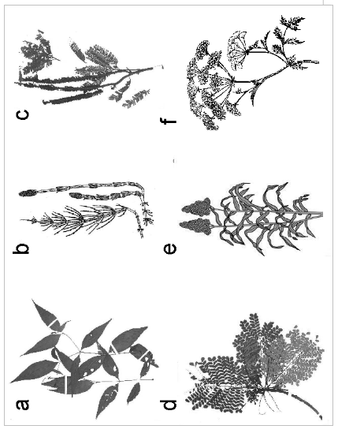

Bioquímica de Plantas Tóxicas
Introdução
Existe grande variabilidade de plantas que se apresentam tóxicas ao consumo animal. Esses exemplares normalmente apresentam determinada biomolécula do metabolismo vegetal secundário que interage inadequadamente com o organismo, atuando como um fator anti-nutricional que pode manifestar-se numa faixa que vai desde a assintomática até o óbito do animal.
A variabilidade do efeito deletério provocado por plantas tóxicas pode ser afetada por dois conjuntos de fatores, a saber: endógenos, da própria planta, e exógenos, do animal que a consome. No primeiro time contam a estrutura do solo e o clima (definem o teor e composição química do princípio ativo), o estágio vegetativo da planta (atuação diferencial do princípio ativo no brotamento, frutificação e floração), partes da planta (folha, flor, semente, raiz), e mesmo o desconhecimento da toxicidade da espécie (introdução de novas extirpes vegetais).
Entre os fatores exógenos que interferem no efeito nocivo de plantas tóxicas podem configurar a espécie animal (ruminantes, caprinos, ovinos, equinos, etc), o mecanismo diferencial da sede (perda do paladar do animal), e o período de ingestão do exemplar.
Detalhes
A ação geral de plantas tóxicas compreende fotossensibilização, cianogenia e toxicidade específica. Entre as perdas diretas envolvidas no consumo das mesmas inclui-se a diminuição da eficiência de tecidos corporais, problemas reprodutivos e morte do animal. Perdas indiretas, por sua vez, podem capitalizar uma redução da resposta imunológica, doenças sub-clínicas, e atraso no crescimento do animal. Como são variadas as plantas tóxicas que acometem os rebanhos em território nacional, buscou-se neste texto enumerar as principais, denominando nome vulgar e científico, princípio ativo, patogenia, tratamento e profilaxia, com ênfase aos aspectos bioquímicos que envolvem sua toxicidade.
Cafezinho, erva-de-rato, roxinha
planta Palicourea marcgravii, da família das Rubiáceas, possui um odor de cânfora ou salicilato de metila no esmagamento do caule. Seu princípio ativo é o fluoroacetato, o qual inibe o ciclo de Krebs por produção de um inibidor da aconitase deste, o fluorcitrato, semelhante ao substrato enzimático citrato, o que gera um déficit energético progressivo no animal. Os sintomas envolvem desequilíbrio, tremores, dispnéia (falta de respiração), convulsão e morte. Não existe tratamento conhecido, sendo a evolução da intoxicação de caráter muito aguda. O controle e a profilaxia estão centrados na erradicação da planta à enxada, e a utilização de cercas para limitar o acesso do rebanho.
Corona, timbó, cipó-prata, suma, rabo-de-tatu
planta Mascagnia sp, da família das Malpiguiáceas, é normalmente ingerida junto à forragem. Seu princípio ativo é um glicosídio digitálico. A patogenia envolve um efeito cardiotônico com alterações iônicas no transporte de cálcio que afetam a contratilidade muscular. Os sintomas abrangem andar rígido, tremores, convulsões, anorexia (falta de apetite), e morte súbita. Não se conhece tratamento específico além do repouso absoluto do animal, podendo-se controlar a disseminação de exemplares por erradicação (enxadão) e pulverização com herbicidas.
Canema, anilão, dama-da-noite, pimenteira
A planta Cestrum sp, da família das Solanáceas, exibe um fruto de coloração azul anil. Seu princípio ativo são saponinas tóxicas (digitogexina e gitogenina). Os sintomas de intoxicação são apatia, ranger de dentes, tremores, hiperexcitabilidade, e óbito em 48 horas. Não existe tratamento específico para o Cestrum, devendo-se amenizar a sintomatologia através de remoção da microbiota ruminal (rumenotomia) e administração de soro glicosado ao animal. O controle e profilaxia envolve o enxadão sem roçada (pode favorecer o brotamento), e mudança da pastagem.
Samambaia, samambaia-do-campo
A planta Pteridium aquilinum da família das Polipodiáceas forma uma touceira densa. Seu princípio ativo é a enzima tiaminase I, que degrada a vitamina B1 (tiamina), convertendo-a em fatores anêmicos (tiazol, pirimidina, cinamato) e neoplásicos (glicosídios). A patogenia define um quadro de deficiência de vitamina B1, levando a um comprometimento neurológico do animal, o qual passa a apresentar sintomas de anemia, leucopenia (diminuição de glóbulos brancos no sangue), hemorragias, edema, e anorexia.
O tratamento é feito com administração de cloridrato de tiamina (equinos) ou com transfusão sanguínea (bovinos). O controle e profilaxia envolvem a calagem (cobertura de calcário), adubação e rotação de pastagens.
Cavalinha
A planta Equisetum sp, da família das Equisetáceas, possui como princípios ativos um alcalóide denominado palustrina, sílica, aconitato e articulina, esse último um inibidor de tiamina). A patogenia da intoxicação é determinada por acúmulo de piruvato e queda de tiamina, envolvendo uma perda de peso e de controle muscular, e um comprometimento neurológico. O tratamento é evidenciado com administração de tiamina.
aveira, cinzeiro, fava-danta, falso-barbatimão
A planta Dimorphandra sp, da família das Leguminosas, possui como princípio tóxico o flavonóide rutina, além de alguns alcalóides. A patogenia é revelada por um aumento nos níveis séricos de ALT e AST. Os sintomas são pelos arrepiados, perda de apetite, pouca excreção, tremores, edema e morte 15 dias ou até em 72 horas. O tratamento é de caráter sintomático apenas, através de administração de soro glicosado e de protetores da mucosa. O controle e profilaxia da moléstia são a erradicação da planta, a retirada dos animais e a suplementação alimentar durante o estio.
Fedegoso
A planta Senna ocidentallis da família das Leguminosas é normalmente ingerida junto com cererais ou com o feno. Seus princípios tóxicos constituem algumas quinonas catárticas, metilmorfalina e oximetilantraquinona. A patogenia se dá através de diarréia intensa, fraqueza muscular, mioglobinúria e decúbito. Amostras plasmáticas evidenciam um aumento no teor de creatinina fosfoquinase e AST. O controle e profilaxia envolvem a retirada da planta ou da ração contaminada, e o cuidado contra a invasão do exemplar.
Mamona, carrapateria, rícino
A planta Ricinus communis da família das Euforbiáceas apresenta o alcalóide ricina como princípio tóxico. A patogenia se evidencia através de um comprometimento neuromuscular do animal. Os sintomas abrangem inquietação, diarréia, incoordenação, sudorese intensa, convulsões e morte. O tratamento pode ser realizado com soro anti-ricíno humano e anti-espasmódicos. O controle deve ser feito evitando-se a contaminação alimentar por sementes ou torta não detoxificada.
Chumbinho, camará, margaridinha
A planta Lantana sp, da família das Euforbiáceas, apresenta alguns triterpenos como o lantadene, além de um derivado metabólico da clorofila, a filoeritrina, princípios fotossensibilizantes (hipersensibilidade animal à luz). A patogenia decorre de uma ação hepática direta, culminando em midríase (diminuição do diâmetro da pupila), hemoglobinúria (urina escura pela presença de hemoglobina oxidada), icterícia (problemas na eliminação de pigmentos biliares), e morte. O tratamento é de caráter sintomático, envolvendo administração de soro glicosado, uso de purgantes, tomada e vitamina A. O controle e profilaxia exigem a transferência dos animais da pastagem afetada.
Barbatimão
A planta Stryphnodendron sp da famíla das Leguminosas apresenta saponinas e taninos tóxicos ao animal. A patogenia envolve fotossensibilização de origem hepática. Os sintomas são apatia, emagrecimento, tremores, desidratação, e anorexia. O tratamento sintomático se dá por administração de soro glicosado e aplicação de pomadas nas áreas afetadas. Apenas a erradicação oferece uma medida profilática e de controle da intoxicação.
Sorgo (Shorghum sp), mandioca (Manihot sp), pessegueiro-bravo (Prunus sphareocarpa)
Todas esssas plantas exibem um glicosídio cianogênico que resulta na inibição da cadeia respiratória das células animais, através da atuação de ácido cianídrico, HCN. Os sintomas são de uma evolução aguda, envolvendo dispnéia, tremores, salivação, convulsão e morte em 20 minutos. O tratamento é realizado por administração de nitrito e hipossulfito. Alternativamente, pode ocorrer uma metabolização hepática do HCN para tiocianato pela rodanase, o qual é eliminado em 48 horas.
Cicuta, funcho-selvagem
A planta Conium maculatum da família das Umbelíferas possui alcalóides voláteis tais como a coniína e a coniceína, que levam a uma dificuldade de deglutição e locomoção do animal em 30 minutos, a partir de seu consumo. Além disso, também pode ocorrer incoordenação e regurgitação animal. O tratamento se dá por lavagem gástrica e administração de carvão ativados, soro glicosado e anti-eméticos. O controle e profilaxia podem ser mediados por erradicação da planta.
